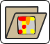
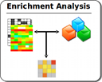
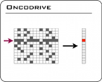
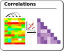
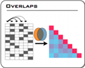

Load Gitools analyses and heatmaps
Use alternatively the menu File->Open
Import data and modules
Use alternatively the menu File->Import
Start an analysis
   
Use alternatively the menu File->New->Analysis or when you have an open heatmap, Analysis.